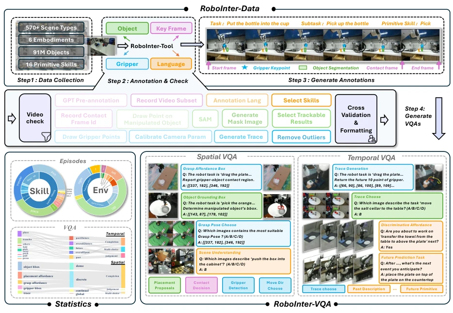
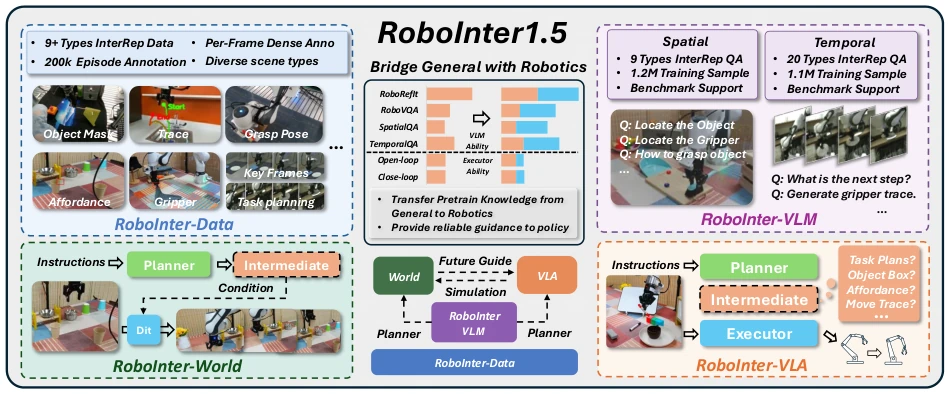
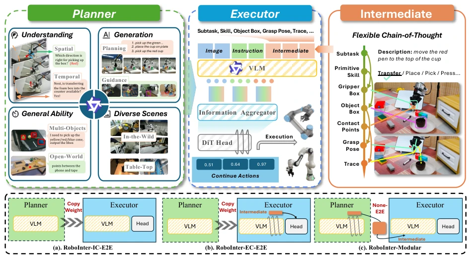
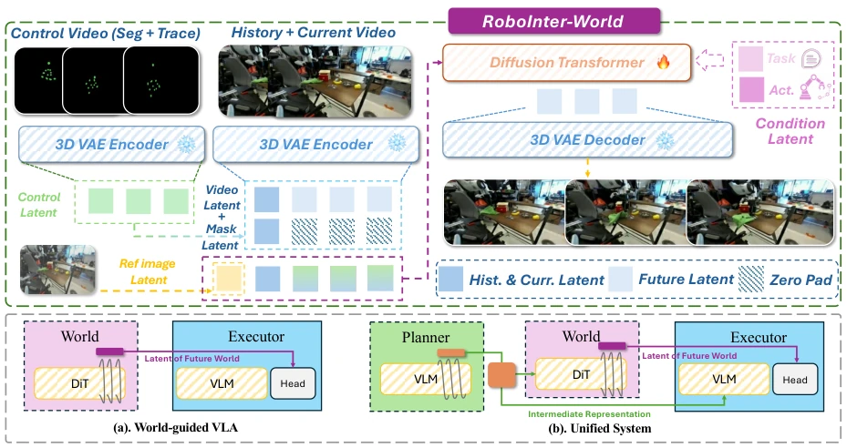
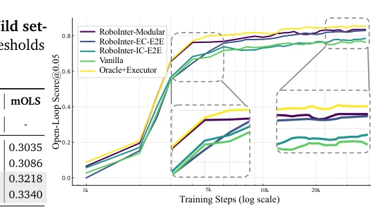
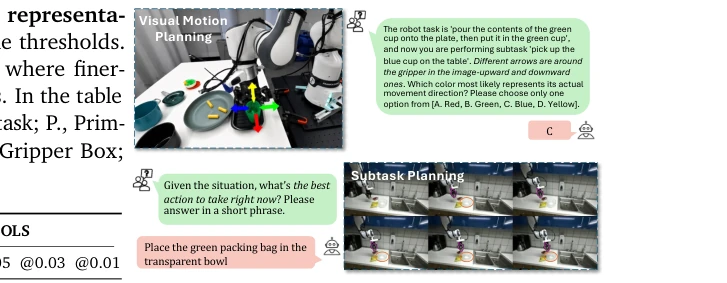
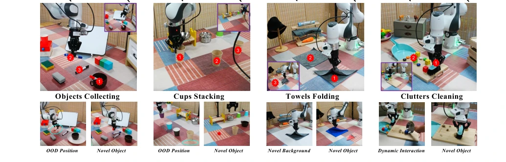
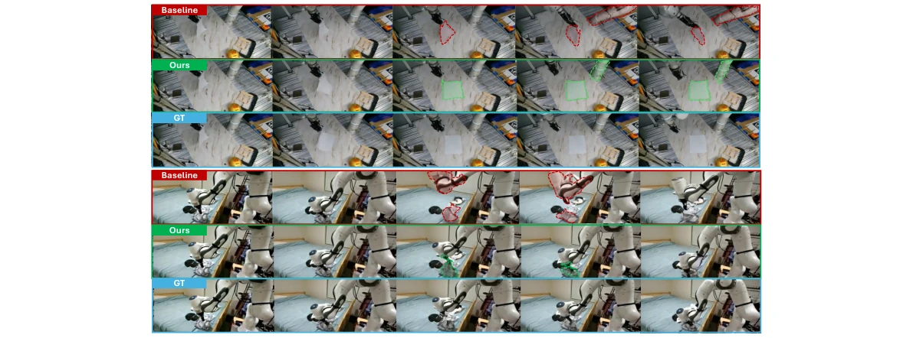
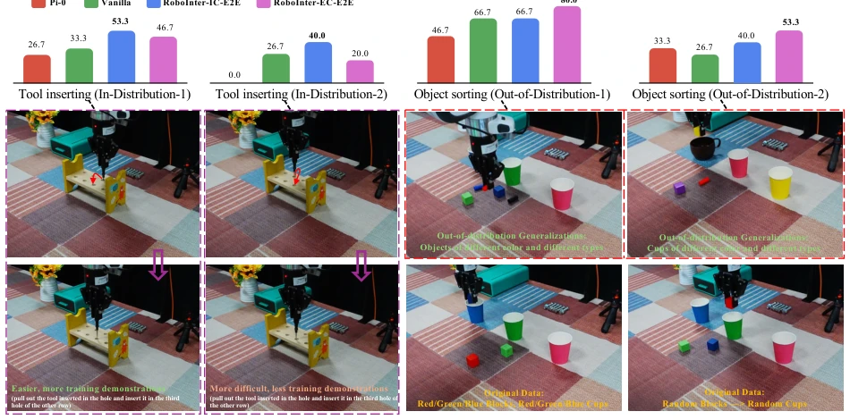
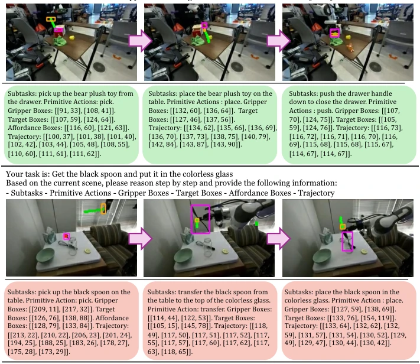

This paper attempts to unify planning, execution, and simulation in embodied intelligence using "Intermediate Representations", which is quite ambitious. RoboInter1.5 indeed has solid data, with 230k clips plus 10+ types of annotations, finer-grained than LLARVA or ECoT. However, under the title of "all-in-one suite", the core still relies on manual + semi-automatic cleaning, and the cost remains high. The World Model part is essentially Diffusion with added control videos; physical consistency is significantly improved, but there is still a distance from true "world understanding". The VLA's Modular scheme is flexible, but it increases inference latency. Overall, it is a high-quality infrastructure construction in the embodied field, but "generalization" still needs more OOD testing verification, do not be fooled by "Holistic". Although VQA data volume is large, task types are still limited to operation scenarios, and generalization to non-operation tasks is questionable.
研究动机Motivation
现有具身数据集（如 RH20T, OXE）多用于模仿学习，缺乏细粒度中间表示标注，导致 VLA 和 World Model 难以继承通用 VLM 的推理能力。LLARVA 虽提取轨迹但敏感于分布偏移，ECoT 依赖文本 CoT 缺乏物理对齐，ShareRobot 规模有限且时序未对齐。通用 VLM 在具身场景下存在 domain gap，直接回归动作易幻觉。构建高质量、多模态的中间表示（如接触点、抓取位姿、运动轨迹）是连接高层语义与底层控制的关键。RoboInter1.5 旨在解决现有数据标注成本高、结构稀疏的问题，为长视界仿真和策略泛化提供统一时空脚手架。此外，现有自动化标注方法难以保证物理一致性，而人工标注成本高昂。
Existing embodied datasets (e.g., RH20T, OXE) are mostly used for imitation learning, lacking fine-grained intermediate representation annotations, making it difficult for VLA and World Model to inherit the reasoning capabilities of general VLMs. LLARVA extracts trajectories but is sensitive to distribution shift; ECoT relies on text CoT lacking physical alignment; ShareRobot has limited scale and temporal misalignment. General VLMs have a domain gap in embodied scenarios, and direct action regression is prone to hallucinations. Constructing high-quality, multimodal intermediate representations (such as contact points, grasp poses, motion trajectories) is key to connecting high-level semantics with low-level control. RoboInter1.5 aims to solve the problems of high existing data annotation costs and sparse structure, providing a unified spatiotemporal scaffold for long-horizon simulation and policy generalization. Additionally, existing automated annotation methods struggle to ensure physical consistency, while manual annotation is costly.

Figure 2. Overview of RoboInter-Data and RoboInter-VQA. We annotate 230k manipulation episodes with 10 types of intermediate representation annotations through Data Collection and Annotation & Check. A large-scale, diverse set of VQA spanning spatial and temporal dimensions is further constructed. Statistics of raw episodes and curated VQA are also provided.
方法Method
整体流程分为数据构建、VQA 训练、VLA 执行与 World Model 生成四步。首先利用 RoboInter-Tool 对 230k 片段进行半自动密集标注，涵盖子任务、技能、物体/夹爪 grounding、接触点等 10+ 类中间表示。基于此构建 RoboInter-VQA 数据集，训练 VLM Planner 理解并生成空间/时序中间表示。VLA 采用 Plan-Then-Execute 范式，Planner 输出 Flexible Chain-of-Thought (F-CoT)，Executor 基于 DiT 头生成动作，支持隐式/显式/模块化三种变体。F-CoT 灵活组合子任务、技能、物体框等，支持文本或视觉形式。World Model 则利用中间表示渲染控制视频（Control Video），作为结构约束输入 Diffusion Transformer，预测未来状态。控制视频通过渲染物体点和夹爪轨迹生成，利用预训练视觉模型的空间先验加速收敛。关键创新在于将中间表示从“可解释信号”转化为“双向接口”，既约束动作空间又指导物理仿真。
The overall process is divided into four steps: data construction, VQA training, VLA execution, and World Model generation. First, RoboInter-Tool is used for semi-automatic dense annotation on 230k clips, covering 10+ types of intermediate representations such as subtasks, skills, object/claw grounding, contact points, etc. Based on this, the RoboInter-VQA dataset is constructed to train the VLM Planner to understand and generate spatial/temporal intermediate representations. VLA adopts the Plan-Then-Execute paradigm; the Planner outputs Flexible Chain-of-Thought (F-CoT), the Executor generates actions based on a DiT head, supporting three variants: implicit/explicit/modular. F-CoT flexibly combines subtasks, skills, object boxes, etc., supporting text or visual forms. The World Model utilizes intermediate representations to render "Control Video", which are input as structural constraints into the Diffusion Transformer to predict future states. Control videos are generated by rendering object points and claw trajectories, utilizing spatial priors from pre-trained visual models to accelerate convergence. The key innovation lies in transforming intermediate representations from "interpretable signals" to "bidirectional interfaces", which both constrain the action space and guide physical simulation.

Figure 1. RoboInter1.5 manipulation suite includes annotation tools, annotated data, a curated VQA dataset, and their applications in VLMs, VLAs, and World Models. RoboInter provides a dataset with over 230k episodes and 10+ types of intermediate representation annotations, named RoboInter- Data; VLMs trained on the curated embodied VQA dataset covering 29 spatial- and temporal-level categories, named RoboInter-VLM; an integrated plan-then-execute framework for training VLA models, RoboInter-VLA; and an intermediate representation guided world model, RoboInter-World.

Figure 3. Framework of RoboInter-VLA. Our model follows a plan-then-execute paradigm with a VLM-based Planner and an Executor. The Planner exhibits enhanced understanding and generation for manipulation, strong general grounding abilities, and robust perception across diverse scenes. The Executor shares the VLM backbone with the Planner. Three variants are supported, and intermediate representations in Flexible Chain-of-Thought (F-CoT) bridge planning and execution.

Figure 4. Overview of RoboInter-World. The mask latent is employed to encode temporal information, explicitly distinguishing between historical/current states and future contents. The control video is encoded into control latents, which are subsequently concatenated with the input latents along the channel dimension. Concurrently, conditioning latents (when available), comprising language instructions and robot actions, guide the diffusion transformer via the cross-attention blocks in the DiT architecture. Two variances in which RoboInter-World guides the action executor are also illustrated.
On benchmarks such as Where2Place, RoboRefIt, RoboVQA, RoboInter-VLM significantly outperforms QwenVL and RoboBrain. In VQA spatial generation tasks, RoboInter-Qwen-7B improves by 76.8% on RoboRefIt. In TableTop open-loop evaluation for VLA, the EC-E2E variant has the best generalization and the smallest OOD performance drop. On the RoboInter-CV benchmark, the World Model significantly reduces object drift and physical hallucinations in long-horizon simulation using control videos. Ablation studies show that F-CoT and explicit conditioning are key to strategy performance improvement. Real-world ID/OOD tests verify the model's robustness on tasks such as tool insertion and object classification, but long-horizon generation still relies on high-quality control signals. Additionally, RoboInter-World demonstrates superior physical simulation capabilities compared to I2V-baseline in zero-shot long-horizon scenarios.

Figure 5. Open-loop evaluation in TableTop setting. We show the curve of OLS@0.05 from 1k to 40k training steps. We mainly report the five variances of RoboInter-VLA.

Figure 6. Inference cases. For the Visual Motion Planning, RoboInter-VLM accurately infers the ac- tion direction of the gripper, demonstrating a strong understanding of spatial relations. For the Subtask Planning, given a video input, RoboInter-VLM can reason about the underlying task intention.

Figure 7. Real-World experiments. The top charts present results from 15 in-distribution (ID) and 15 out-of-distribution (OOD) trials. The bottom panel illustrates the OOD test setup. Notably, the performance drop from ID to OOD reflects each model’s generalization under distribution shift, where EC-E2E outperforms IC-E2E and exhibits a smaller ID→OOD degradation (8.3% vs. 19.0%), showing the consistent conclusion with the Open-Loop Evaluation. Key steps are marked with a number, along with an end-execution thumbnail. Experiments of RoboInter-Modular are in the Appendix.

Figure 8. Qualitative comparison in two representative zero-shot, long-horizon scenarios from the test set: putting down a tissue and picking up a cloth. Each sequence represents a single-chunk prediction lasting approximately 4 seconds (64 frames). Compared to the action-guided I2V-baseline 14B model, our model demonstrates significantly better physical simulation of object deformations and gripper traces under long-horizon control, highlighting its superior generalization capabilities in unseen environments.

Figure 9. Additional real-world ID and OOD validation. (Left) Tool Inserting: a precision ID task requiring accurate contact handling and slot alignment. (Right) Object Sorting: an OOD task that tests language-guided generalization using novel objects and containers.

Figure 10. Chain of thought of RoboInter-VLA. Two representative examples (used in RoboInter-EC- E2E and RoboInter-Modular) are shown. The upper example involves a sequence of manipulation behaviors, including picking, placing, and pushing, while the lower one focuses on a pick-and-place task. RoboInter-VLA predicts and utilizes structured chain-of-thought representations consisting of subtasks, primitive skills, gripper boxes, target object boxes, affordance boxes, and traces.